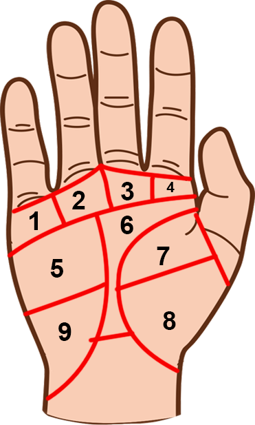

Các gò của bàn tay Là những mô thịt nằm trên các khu vực khác nhau trong lòng bàn tay. Tính
cách và thậm chí cả đặc điểm cơ thể cũng được thể hiện qua các gò nỗi trên lòng bàn tay..
Chúng ta có thể nhận biết các gò bằng cách quan sát lòng bàn tay qua các góc độ khác nhau và
xem xem các gò nào cao nhất. Vì gò Kim Tinh và gò Thái Âm gò lớn nhất nên chúng ta cần phải
so sánh chiều cao chứ không phải chiều rộng để xác định gò nổi.

Các gò chính nổi trên lòng bàn tay bao gồm: - Gò Kim Tinh nằm dưới ngón tay cái, tượng trưng
cho tình cảm, sức khỏe và cuộc sống của từng người. Về mặt hình thể, những người có gò Kim
Tinh nổi thường có chiều cao trên trung bình, khuôn mặt tròn, mắt to và sáng, miệng nhỏ môi
dày, răng trắng và tai nhỏ. Họ có mu bàn tay cao, mắt cá chân nhỏ và gọn và cặp đùi dài. Nam
giới có gò Kim Tinh thường không bị rụng tóc cho đến cuối đời. Những người có gò Kim Tinh
nổi có cơ thể khỏe mạnh, tính cách vui vẻ, là những người hạnh phúc, hay duy cảm, yêu cuộc
sống và thích hoạt động xã hội. Họ tốt bụng, không thích tranh cãi, xung đột và chiến tranh.
- Gò Thái Âm nằm dưới gò Hỏa Tinh, phần cuối, gần cạnh bàn tay và cổ tay, tượng trưng cho
trí tưởng tượng. Những người có gò Thái Âm nổi thường rất cao ráo, đầu tròn và trán rộng,
tóc mềm. Răng to và hơi vàng, miệng nhỏ với cặp môi dày và đầy, đôi mắt to và lồi là đặc
trưng của những người này. Những người có gò Thái Âm nổi này thường xuyên lo lắng về sức
khỏe, chính điều này cũng gây cho họ một số vấn đề hệ tuần hoàn kém hay bị kiệt sức, gặp các
vần đề về thận hoặc bàng quang. Với tính khí bất thường, những người có gò Thái Âm nổi
thường có sức hấp dẫn và sống cuộc sống đầy đủ. Họ thích đi du lịch để có được những trải
nghiệm mới mẻ và thú vị, nhưng cũng thích nghỉ ngơi thư giản. Họ không kiêm định hay nôn
nóng, thích bắt đầu công việc mới khi công việc cũ chưa hoàn thành. - Gò Hỏa Tinh âm nằm
dưới gò thủy tinh, phần giữa, gần cạnh bàn tay, tượng trưng cho sức chiến đấu. Những người
có gò Hỏa tinh nổi thường cao hơn mức trung bình, có cấu trúc xương chắc khỏe; đặc điểm về
hình thể đáng chú ý nhất là xương gò má cao. Họ miệng rộng, mắt to, môi mỏng, răng nhỏ và
hơi vàng. Đầu và tay hơi dài, mũi hơi khoằn. Giọng nói đầy quyền uy và thường thu hút sự chú
ý của người khác. Tính khí nóng nảy của họ thường được thể hiện rõ khi bị kích động, do đó
họ ngẫu nhiên hay bị tổn thương khi tranh luận. Những người có gò Hỏa Tinh nổi thường là
những người đa tình, hào phóng và thích tham gia vào các hoạt động xã hội. Họ hơi độc đoán,
và thường không thích nghe giải thích lý lẽ một khi đã có định kiến trong đầu. Mặc dù đôi
khi tính cách nóng nẩy cũng gây ra nhiều vấn đề rắc rối, nhưng họ là người dũng cảm và không
ác tâm. - Gò Thủy Tinh nằm dưới ngón út, tượng trưng cho sự thông minh và hiểu biết. Người
có gò Thủy Tinh nổi có thân hình nhỏ nhắn và cấu trúc xương tốt, nên sẽ trẻ lâu hơn những
người khác. Tóc hơi quăn và làn da mềm mại. Họ có đôi mắt sâu và sắc sảo, cằm dài nhọn và
bàn tay to với giọng nói dài. Người có gò Thủy Tinh nổi thường là thể chất yếu đuối và hay
cả nghĩ. Họ dễ bị suy gan và các bệnh tiêu hóa Những người có gò Thủy Tinh nổi thường có suy
nghĩ nhanh. Họ khéo léo trong tất cả các trò chơi, giỏi toán, y khoa, và cả trong lĩnh vực
kinh doanh. Họ là những người am hiểu tâm lý người khác, có bản tính ôn hòa, thích sự gần
gũi của cuộc sống gia đình. Sắc sảo và hòa đồng với mọi người, họ có thể trở thành những
quan sát viên và diễn viên nổi tiếng. - Gò Thái Dương nằm dưới ngón đeo nhẫn, tượng trưng
cho năng khiếu và tài năng. Những người có gò Thài Dương (gò Apollo) nổi, thường cao trên
trung bình, và có thân hình vạm vỡ quyến rũ và cân đối. Tóc mềm và lượn sóng, miệng trung
bình và một trong những đặc điểm hấp dẫn nhất ở họ là đôi mắt hình quả hạnh, to và đẹp.
Những người có gò Thái Dương nổi thường có thể lực tốt. Đôi mắt đẹp nhưng thị lực kém khiến
họ dễ bị thương do các tai nạn không đáng có. Những người có Thái Dương nổi có tư duy linh
hoạt, với các quy trình suy nghĩ và tim hiểu rõ ràng, hợp logic. Họ yêu những gì đẹp đẽ
trong tự nhiên và trong nghệ thuật. Tuy nhiên, họ cũng là người quyết đoán và hay ganh đua,
luôn muốn là người dẫn đầu. Họ là những người sôi nổi và đáng tin cậy, nhưng cần phải cẩn
thận để tránh bị họ cho ra ngoài rìa, Vì họ có thể là những đối thủ quyết liệt. - Gò Thổ
Tinh nằm dưới ngón giữa, tượng trưng cho định mệnh. Những người có gò Thổ Tinh nổi cao và
gầy thường có khuôn mặt thon dài và nước da xanh. Đôi mắt sâu và hướng xuống dưới, tạo cho
họ nét u buồn. Họ có miệng rộng, môi mỏng, hàm dưới to và răng đẹp. Những người này có đặc
điểm là dễ mắc những bệnh về chân, cơ thể hay bị thiếu nước do không thích uống nước. Những
người có gò Thổ Tinh nổi thường buồn chán trong cuộc sống. Với bản tính dè dặt và đa nghi,
họ không thích đưa ra mệnh lệnh, rất thận trọng, nhưng lại giỏi gải quyết các vấn đề và quan
tâm đến các khoa học huyền bí. Họ thích cuộc sống nông thôn và thích sự cô độc. Họ tiết kiệm
nhiều tiền và ít tiêu phá. Nhưng đôi khi là những tay cờ bạc say sưa. Họ thích các gam màu
tối - Gò Mộc Tinh nằm dưới ngón trỏ, tượng trưng cho uy quyền. Những người có gò Mộc Tinh
nổi có cấu trúc xương khỏe, cao trung bình, thường có nhiều đường cong quyến rũ, dáng đi
thẳng và nghiêm. Đôi mắt thường to và sâu, mái tóc lượn sóng và dầy, mũi thẳng, miệng đầy,
răng dài, và có lúng đồng tiền ở gần dưới cằm, và tai ở chếch lên phía đầu. Nam giới có thể
rụng tóc ngay còn trẻ. Người có gò Mộc Tinh nổi dễ mắc các bệnh về tiêu hóa và thường hay bị
béo phì. Họ có thiên hướng thích hợp với cuộc sống cộng đồng, rất tự tin nhưng đôi khi cũng
ích kỷ. Họ thích đi ăn ở ngoài, thích các hoạt động mang tính xã hội và tiêu tiền không cần
nghĩ. Họ thích hòa bình, tin tưởng ở luật pháp và trật tự, nhưng cũng là người có tính bảo
thủ ở một mức độ nào đó. - Gò Thủy Tinh nằm dưới ngón út, tượng trưng cho sự thông minh và
hiểu biết. Người có gò Thủy Tinh nổi có thân hình nhỏ nhắn và cấu trúc xương tốt, nên sẽ trẻ
lâu hơn những người khác. Tóc hơi quăn và làn da mềm mại. Họ có đôi mắt sâu và sắc sảo, cằm
dài nhọn và bàn tay to với giọng nói dài. Người có gò Thủy Tinh nổi thường là thể chất yếu
đuối và hay cả nghĩ. Họ dễ bị suy gan và các bệnh tiêu hóa Những người có gò Thủy Tinh nổi
thường có suy nghĩ nhanh. Họ khéo léo trong tất cả các trò chơi, giỏi toán, y khoa, và cả
trong lĩnh vực kinh doanh. Họ là những người am hiểu tâm lý người khác, có bản tính ôn hòa,
thích sự gần gũi của cuộc sống gia đình. Sắc sảo và hòa đồng với mọi người, họ có thể trở
thành những quan sát viên và diễn viên nổi tiếng. - Gò Hỏa Tinh dương nằm giữa gò Kim Tinh
và Mộc Tinh, tượng trưng cho lòng can đảm và sự tự tin. - Cánh đồng Hỏa Tinh là phần trũng
nhất, nằm ở chính giữa của lòng bàn tay, được xem như cái khóa cuối cùng để kiểm soát các gò
khác.